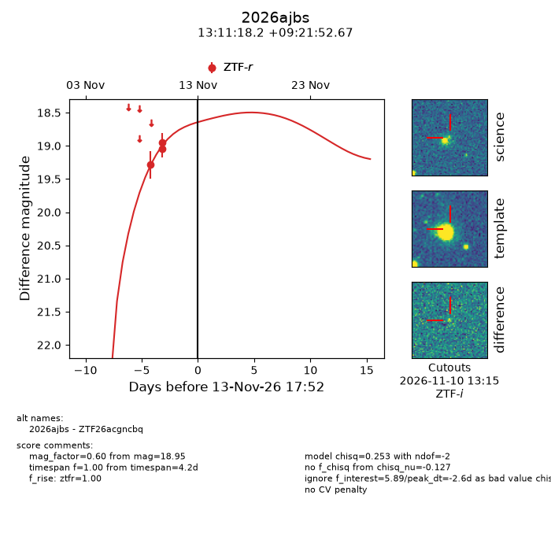
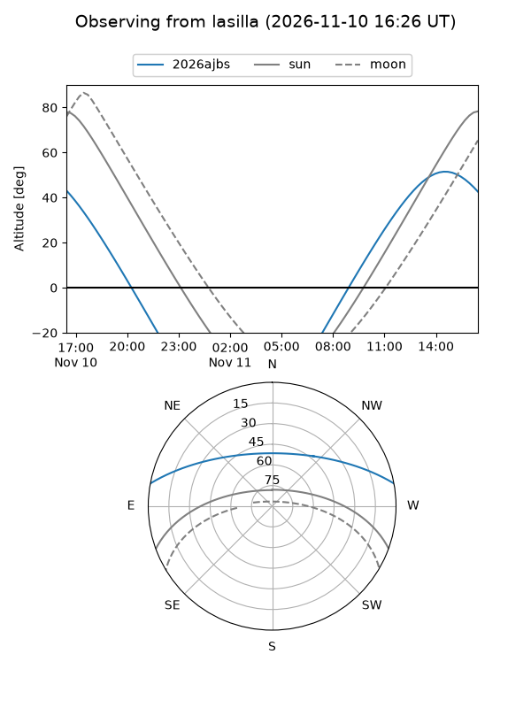
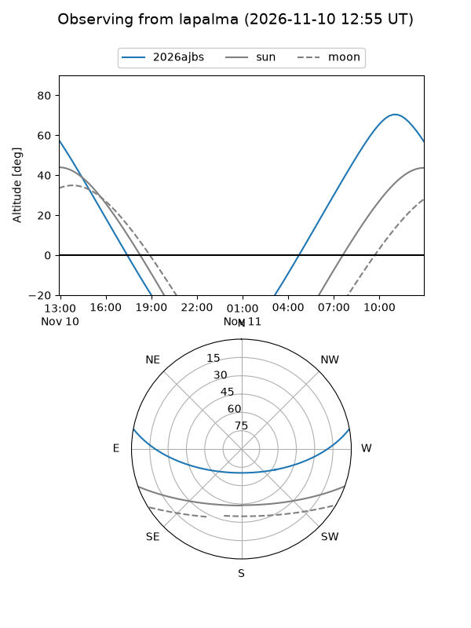
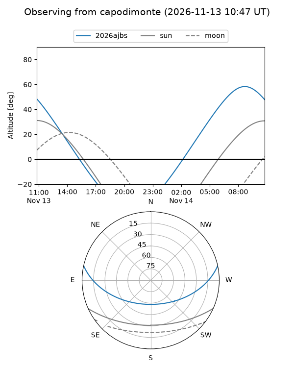
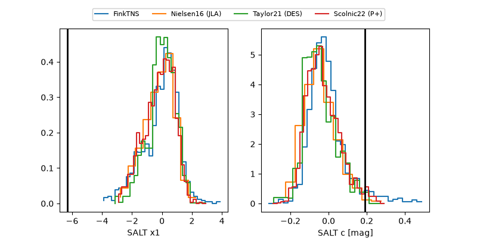

2026ajbs
Target 2026ajbs at 2026-11-13 17:58
Aliases and brokers:
FINK-ZTF: ztf.fink-portal.org/ZTF26acgncbq
Lasair-ZTF: lasair-ztf.lsst.ac.uk/objects/ZTF26acgncbq
ALeRCE-ZTF: alerce.online/object/ZTF26acgncbq
YSE-PZ: ziggy.ucolick.org/yse/transient_detail/2026ajbs
TNS name: wis-tns.org/object/2026ajbs
Direct TNS query: direct search
alt names
ZTF26acgncbq (ztf,fink_ztf)
2026ajbs (tns,yse)
Coordinates:
equatorial (ra, dec) = 197.8258,+9.36463
equatorial (HMS+DMS) = 13:11:18.20,+09:21:52.67
galactic (l, b) = (318.6555,+71.62734)
Flags:
peak dt: -2.6
Photometry:
last ztfr=18.95
3 ztfr detections
Lightcurve

Visibility



Additional plots
